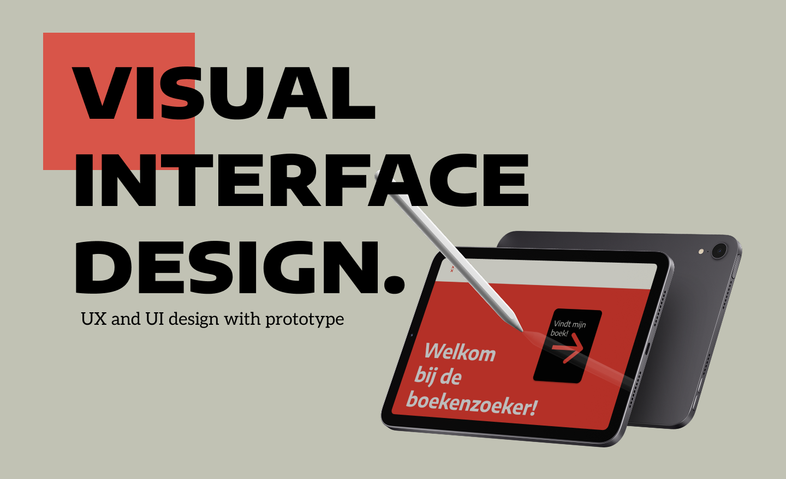

Cases
Contact
Alia
van
Ommen
experience designer.
Stained Glass Stories
AR design

Visual interface design.
De boekenzoeker
Responsive multi device design.
Budget on the go
Immersive experience design.
The phone detox project
Your browser does not support the video tag.
Passion project
My own song